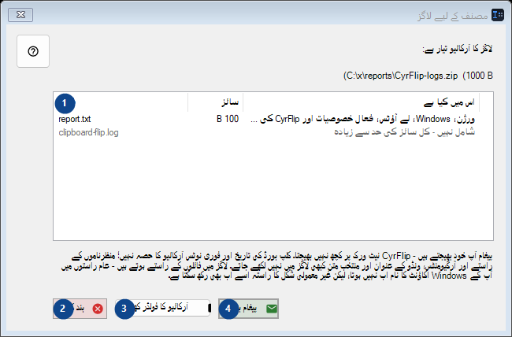
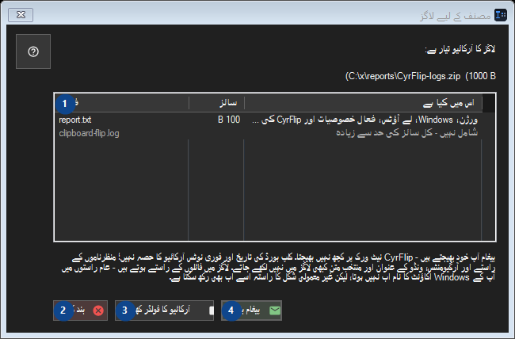

مصنف کے لیے لاگز
مقصد
نمبر وار وضاحتیں پڑھیں، مطلوبہ اقدار منتخب کریں اور ونڈو کے حکم سے آگے بڑھیں۔


استعمال کی ترتیب
نمبر وار وضاحتیں پڑھیں، مطلوبہ اقدار منتخب کریں اور ونڈو کے حکم سے آگے بڑھیں۔
عناصر
1. لاگز کا آرکائیو تیار ہے:
یہ حصہ موجودہ مواد یا حالت دکھاتا ہے۔ کام کرنے کے لیے اندراج منتخب کریں۔ فائل / سائز / اس میں کیا ہے
آپ کے شارٹ کٹ2. بند کریں
درج شدہ کارروائی کے لیے یہ حکم استعمال کریں۔ قبول کرنے سے پہلے تصدیق پڑھیں۔
آپ کے شارٹ کٹ3. آرکائیو کا فولڈر کھولیں
درج شدہ کارروائی کے لیے یہ حکم استعمال کریں۔ قبول کرنے سے پہلے تصدیق پڑھیں۔
آپ کے شارٹ کٹ4. پیغام بنائیں
درج شدہ کارروائی کے لیے یہ حکم استعمال کریں۔ قبول کرنے سے پہلے تصدیق پڑھیں۔
آپ کے شارٹ کٹ